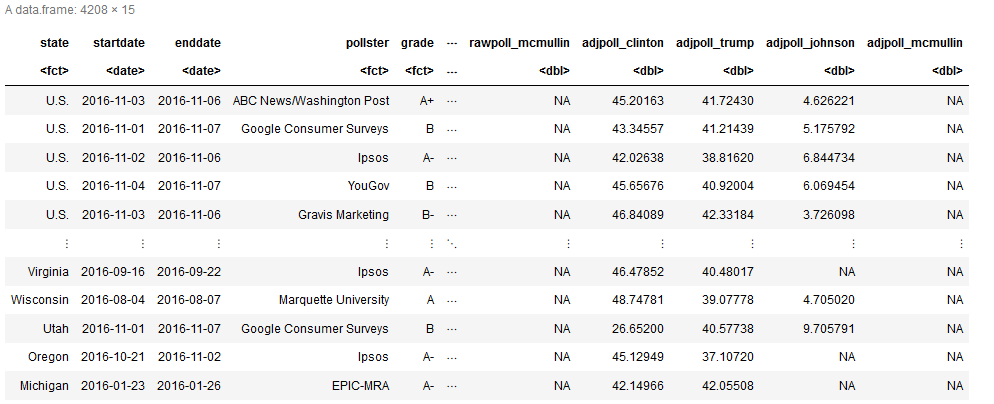
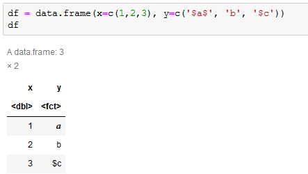

How to Display All Columns in R Jupyter
I like to do one-off analyses in R because tidyverse makes it really easy and beautiful. I also like to do them in Jupyter Notebooks because they form a neat way to collate the results. While R Markdown is better for reproducible code, often I’m doing expensive things with databases that are changing, and so I tend to find the “write once” behaviour of Jupyter Notebooks fit this use case better (although R Markdown Notebooks are catching up).
This is possible with IRKernel, but if you have lots of rows and columns it will only show a sample.

To show more columns in R you usually adjust width (up to 10000) or tibble.width (up to Inf) with options. However IRKernel has it’s own display method repr and out have to set the options manually on it:
options(repr.matrix.max.cols=150, repr.matrix.max.rows=200)Obviously you adjust rows and columns to how many you want to display.
Another problem is that it will interpret text between $ characters as LaTeX, which is really annoying if you’ve got text with currency.

The best thing to do is to escape these characters before display using function(x) gsub('\\$', '\\\\$', x). When using dplyr this can be automated for all character strings by appending to the pipeline
%>% mutate_if(is.character, function(x) gsub('\\$', '\\\\$', x))One final trick is you may want to actually want to display some HTML you’ve marked up in Jupyter; to do this you use IRdisplay::display_html (analogous to Python’s display and HTML in IPython.core.display). For example to display a link to this website you could use:
IRdisplay::display_html('<a href="https://Skeptric.com">Skeptric</a>')Using R in Jupyter isn’t quite as smooth or well documented as Python, but with these tricks you can get around some of the rough edges.